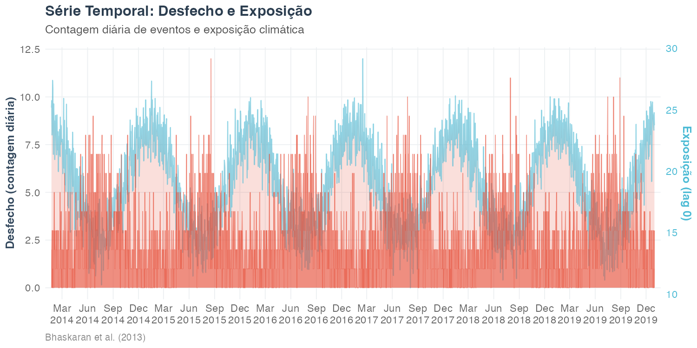
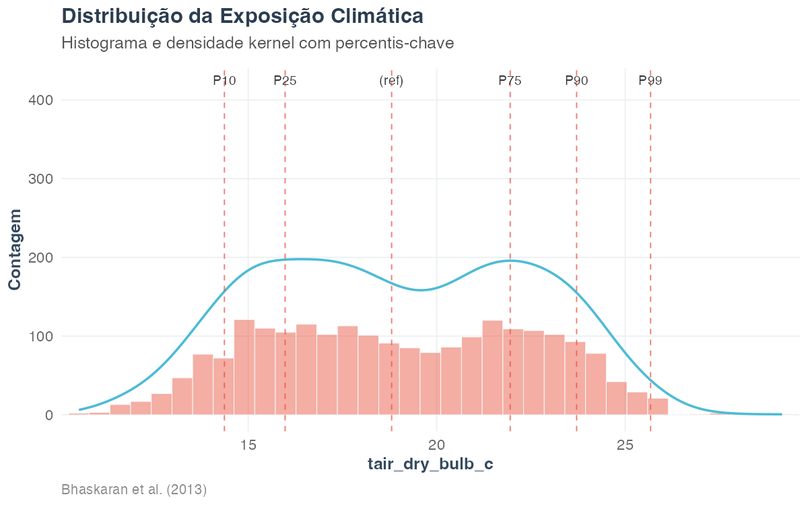
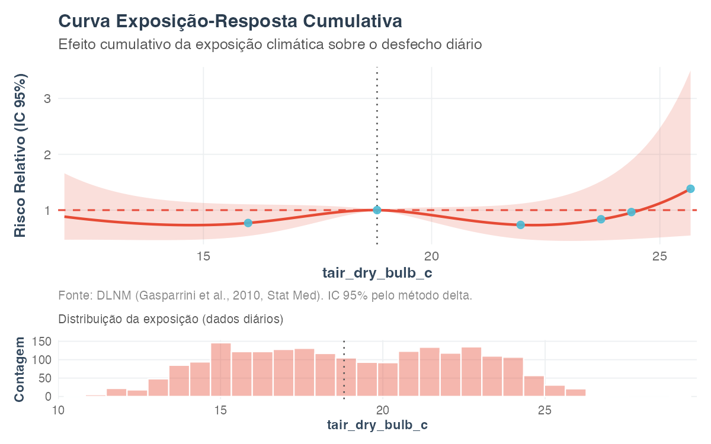
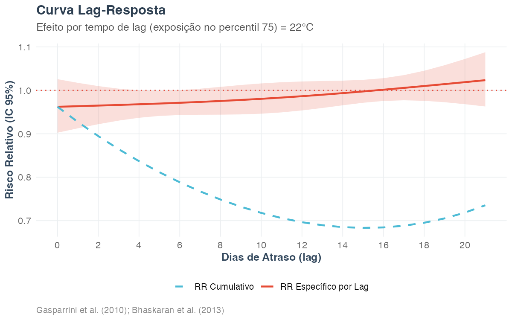
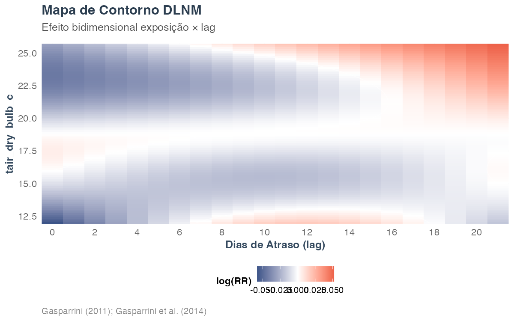
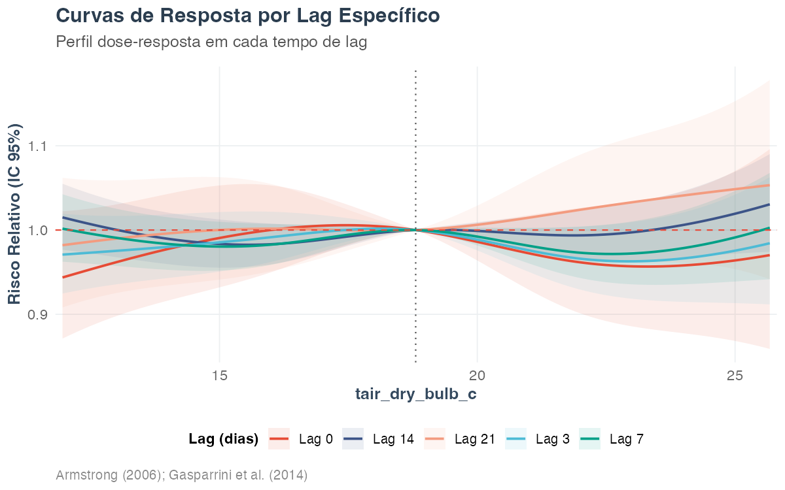

Modelagem 1: DLNM — Modelo de Defasagem Distribuída Não-Linear
Equipe climasus4r
10/07/2026
Source:vignettes/mod-01-dlnm.Rmd
mod-01-dlnm.RmdObjetivo
Ao final deste tutorial você será capaz de ajustar um DLNM
(Distributed Lag Non-linear Model) para quantificar a relação
entre temperatura e mortalidade diária, interpretar a curva
exposição-resposta cumulativa, a curva
lag-resposta e a superfície bidimensional
exposição × lag, e conhecer todas as visualizações disponíveis em
sus_mod_plot_dlnm().
O DLNM é a pedra angular do chapéu bioestatístico do
climasus4r. Ele conecta a série diária de saúde (produzida
nos Tutoriais 1–4) à exposição climática alinhada (Tutoriais 7–8) e
produz estimativas de risco relativo prontas para quantificação de carga
atribuível (Tutorial de Modelagem 2), meta-análise multi-cidade
(Tutorial de Modelagem 5) e análise de vulnerabilidade (Tutorial de
Modelagem 9).
Contexto científico
A epidemiologia ambiental moderna reconhece que a associação entre temperatura e mortalidade é não-linear e defasada no tempo. O calor extremo mata nos primeiros 1–2 dias (efeito agudo); o frio mata ao longo de 1 a 3 semanas (efeito tardio e cumulativo). Modelar apenas a temperatura do mesmo dia subestima sistematicamente o risco do frio e pode mascarar o pico de mortalidade no inverno subtropical.
Gasparrini, Armstrong & Kenward (2010)
propuseram o DLNM para resolver esse problema com uma
cross-basis: o produto externo de duas bases de splines — uma
na dimensão da exposição (captura a forma U/J: risco
sobe no frio e no calor) e outra na dimensão do lag
(captura como o efeito se distribui pelos dias seguintes). A
implementação em R é o pacote dlnm (Gasparrini,
2011), sobre o qual o climasus4r constrói
sus_mod_dlnm().
O ajuste segue as boas práticas de regressão de séries temporais em epidemiologia ambiental sistematizadas por Bhaskaran et al. (2013): modelo log-linear quasi-Poisson, controle de tendência de longo prazo e sazonalidade por spline natural do tempo, e risco relativo centrado na mediana da exposição como valor de referência (Armstrong, 2006).
As fórmulas detalhadas da crossbasis e do RR cumulativo são apresentadas na seção Fórmulas abaixo.
Caso condutor. Investigamos a temperatura e os desfechos de saúde em idosos (60+) na Região Metropolitana de São Paulo, 2014–2019 (doenças respiratórias J00–J99). Juntamos a série diária de óbitos (
dados/caso_serie.rds, Tutorial 4) com a temperatura da estação INMET A701 (dados/caso_clima_estacao.rds, Tutorial 7), construímos a estrutura de lags distribuídos e ajustamos o DLNM quasi-Poisson para estimar a curva exposição-resposta e o lag de pico.
Fórmulas
O DLNM modela o número esperado de eventos na data como:
onde é a função cross-basis — produto externo de uma base de spline sobre a exposição (temperatura no lag ) e de uma base de spline sobre o lag , com vetor de coeficientes ; é um spline natural do tempo para controlar sazonalidade e tendência de longo prazo; e controla o efeito do dia da semana.
O efeito cumulativo da exposição relativamente ao valor de referência (mediana de lag-0) é:
Parâmetros-chave implementados por
sus_mod_dlnm():
| Parâmetro | Notação | Controlado por |
|---|---|---|
| Base da exposição | sobre | argvar |
| Base do lag | sobre | arglag |
| Janela de lag | lag_max |
|
| gl sazonalidade | gl de | dof_per_year |
| Valor de referência | ref_value |
Dados utilizados
| Entrada | Origem | Conteúdo | Papel |
|---|---|---|---|
dados/caso_serie.rds |
Tutorial 4 | Série diária de óbitos (idosos 60+) | Desfecho n_obitos
|
dados/caso_clima_estacao.rds |
Tutorial 7 | Temperatura diária da estação A701 | Exposição tair_dry_bulb_c
|
As duas séries são unidas por data. A exposição é
então expandida em 22 colunas de lag distribuído
(tair_dry_bulb_c_lag0, …,
tair_dry_bulb_c_lag21), estrutura que em fluxo real é
produzida por
sus_climate_aggregate(temporal_strategy = "distributed_lag", lag_days = 21).
O script protege cada etapa com file.exists() e, se as
entradas faltarem, gera uma série sintética mínima
realista (com sinal de temperatura-mortalidade em V) para que o
código rode mesmo sem o pipeline completo.
Pipeline completo
Os blocos abaixo reproduzem exatamente o que
scripts/modelagem_01_dlnm.R executa.
library(climasus4r)Bloco 0 — Carregar as entradas encadeadas
# Caminhos das entradas encadeadas
path_saude <- file.path("vignettes-pt", "dados", "caso_serie.rds")
path_clima <- file.path("vignettes-pt", "dados", "caso_clima_estacao.rds")
# Série diária de saúde
saude_diaria <- NULL
if (file.exists(path_saude)) {
caso_serie <- readRDS(path_saude)
saude_df <- dplyr::as_tibble(caso_serie)
saude_diaria <- saude_df |>
dplyr::summarise(n_obitos = sum(n_obitos, na.rm = TRUE), .by = date) |>
dplyr::arrange(date)
}
# Série diária de temperatura
clima_diario <- NULL
if (file.exists(path_clima)) {
caso_clima <- readRDS(path_clima)
clima_diario <- caso_clima$clima_diario |>
dplyr::transmute(date = as.Date(date), tair_dry_bulb_c) |>
dplyr::arrange(date)
}
# Fallback sintético realista (série em V, 6 anos)
if (is.null(clima_diario) || is.null(saude_diaria)) {
# ... veja scripts/modelagem_01_dlnm.R para a implementação completa
}
# Juntar por data
serie <- dplyr::inner_join(saude_diaria, clima_diario, by = "date") |>
dplyr::arrange(date) |>
tidyr::drop_na(n_obitos, tair_dry_bulb_c)Bloco 1 — Construir a estrutura de lags distribuídos
Em fluxo completo do climasus4r, as colunas
_lagN são produzidas por
sus_climate_aggregate(temporal_strategy = "distributed_lag", lag_days = 21).
Aqui, com a série já alinhada por data, geramos os lags diretamente:
VAR_TEMP <- "tair_dry_bulb_c"
LAG_MAX <- 21L
df_lags <- serie
for (k in 0:LAG_MAX) {
df_lags[[paste0(VAR_TEMP, "_lag", k)]] <- dplyr::lag(serie$tair_dry_bulb_c, n = k)
}
# Seleciona apenas: date, desfecho, colunas de lag
df_lags <- df_lags |>
dplyr::select(
date, n_obitos,
dplyr::all_of(paste0(VAR_TEMP, "_lag", 0:LAG_MAX))
)
# Promove a climasus_df com stage = "climate", type = "distributed_lag"
df_dl <- dplyr::as_tibble(df_lags)
attr(df_dl, "sus_meta") <- list(
system = "SIM",
stage = "climate",
type = "distributed_lag",
backend = "tibble",
history = "[derivado] serie diaria -> lags distribuidos tair_dry_bulb_c"
)
class(df_dl) <- c("climasus_df", class(df_dl))Bloco 2 — sus_mod_dlnm(): ajuste do DLNM
quasi-Poisson
fit <- sus_mod_dlnm(
df = df_dl,
outcome_col = "n_obitos",
climate_col = "tair_dry_bulb_c",
lag_max = 21L,
covariates = NULL, # confundidores adicionais (opcional)
argvar = list(fun = "ns", df = 4), # spline natural, 4 gl exposição
arglag = list(fun = "ns", df = 3), # spline natural, 3 gl lag
family = "quasipoisson", # robusto à superdispersão
ns_df = NULL, # calculado automaticamente via dof_per_year
dof_per_year = 4L, # gl/ano para sazonalidade (use 6 para Brasil subtropical)
ref_value = NULL, # mediana de lag-0 = valor de referência
pred_at = c(0.25, 0.50, 0.75, 0.90, 0.95, 0.99),
alpha = 0.05,
lang = "pt",
verbose = TRUE
)
# Inspecionar o resultado
print(fit)
fit$exposure_response # RR cumulativo nos percentis pred_at
fit$lag_response # RR por lag no percentil 75
fit$diagnostics # razão de dispersão, Ljung-Box, AICBloco 3 — sus_mod_plot_dlnm(): todas as
visualizações
# overall: curva exposição-resposta cumulativa (painel principal + histograma)
sus_mod_plot_dlnm(fit, type = "overall", lang = "pt")
# lag: curva lag-resposta no percentil 75 (RR específico e cumulativo)
sus_mod_plot_dlnm(fit, type = "lag", lang = "pt")
# surface: superfície 3-D bidimensional exposição × lag
# (interactive = FALSE usa contorno estático como fallback)
sus_mod_plot_dlnm(fit, type = "surface", interactive = FALSE, lang = "pt")
# contour: mapa de contorno 2-D log(RR) para publicação
sus_mod_plot_dlnm(fit, type = "contour", lang = "pt")
# slice: curvas de resposta por lag específico (valores > lag_max são descartados)
sus_mod_plot_dlnm(fit, type = "slice",
lags_at = c(0L, 3L, 7L, 14L, 21L), lang = "pt")
# distribution: histograma/densidade da exposição com percentis-chave
sus_mod_plot_dlnm(fit, type = "distribution", lang = "pt")
# series: série temporal desfecho (barras) + exposição lag-0 (eixo dual)
sus_mod_plot_dlnm(fit, type = "series", lang = "pt")
# output_type = "all": retorna lista nomeada $plot, $table, $data
out <- sus_mod_plot_dlnm(fit, type = "overall",
output_type = "all", lang = "pt")
out$table # lista de 3 gt_tbl: especificação, curva RR, diagnósticos
out$data # lista: $exposure_response, $lag_response, $data_daily, $diagnosticsBloco 4 — Salvar o fit para reuso (M2 e M8)
# O objeto climasus_dlnm é salvo para alimentar
# Tutorial M2 (fração atribuível) e M8 (meta-análise multi-cidade).
# save_tbl() (definida em scripts/_setup_tutoriais.R) persiste em
# vignettes-pt/dados/mod_dlnm_fit.rds; o script também copia para
# dados/mod_dlnm_fit.rds (raiz do pacote) para encadeamento com M2 e M8.
save_tbl(fit, "mod_dlnm_fit")
saveRDS(fit, file.path("dados", "mod_dlnm_fit.rds"))Características das funções
sus_mod_dlnm()
Ajusta um DLNM a partir de um climasus_df no estágio
"climate" / tipo "distributed_lag", produzido
por
sus_climate_aggregate(temporal_strategy = "distributed_lag").
Constrói a crossbasis, ajusta um GLM e pré-computa a
crosspred numa grade de 100 pontos entre o 1° e o 99°
percentil da exposição.
| Argumento | Padrão | Descrição |
|---|---|---|
df |
— |
climasus_df com date, desfecho e colunas
{var}_lagN
|
outcome_col |
"n_obitos" |
Nome da coluna de contagem diária do desfecho |
climate_col |
NULL |
Base do nome da exposição (sem _lagN); autodetecta por
prioridade se NULL
|
lag_max |
NULL |
Lag máximo; autodetecta do maior N nas colunas
_lagN
|
covariates |
NULL |
Confundidores adicionais a incluir linearmente no GLM |
argvar |
list(fun="ns", df=4) |
Base da dimensão de exposição da crossbasis |
arglag |
list(fun="ns", df=3) |
Base da dimensão de lag da crossbasis |
family |
"quasipoisson" |
Família GLM; "negbin" é redirecionada para
"quasipoisson"
|
ns_df |
NULL |
gl para o spline temporal; NULL usa
dof_per_year × n_anos
|
dof_per_year |
4L |
gl por ano para sazonalidade (recomendado 6 no Brasil subtropical) |
ref_value |
NULL |
Valor de referência (RR = 1); NULL usa a mediana de
lag-0 |
pred_at |
c(.25,.5,.75,.9,.95,.99) |
Quantis para relatar na tabela $exposure_response
|
alpha |
0.05 |
Nível do IC (padrão: 95% CI) |
lang |
"pt" |
Idioma das mensagens: "pt", "en",
"es"
|
Retorno — objeto climasus_dlnm (lista
S3):
| Componente | Conteúdo |
|---|---|
$model |
Objeto glm ajustado (compatível com
dlnm::crosspred()) |
$crossbasis |
Objeto dlnm::crossbasis (base exposição × lag) |
$pred |
Objeto dlnm::crosspred — allRRfit/low/high
(efeito geral) e matRRfit/low/high (lag-específico) |
$exposure_response |
Tibble: pct, exposure, rr,
lo, hi nos percentis pred_at
|
$lag_response |
Tibble: lag, rr, lo,
hi, rr_cum — RR por lag no P75 |
$models |
Tibble resumo de 1 linha: variable, n,
family, lag_max, rr,
lo, hi, lag_peak,
disp_ratio, aic_poisson
|
$data_daily |
Tibble agregada por data (desfecho somado; clima em média) usada no ajuste |
$diagnostics |
Lista: disp_ratio, disp_category,
autocorr_pval, has_autocorr,
aic_poisson, deviance,
df_residual
|
$meta |
Lista com todos os parâmetros do ajuste + histórico
sus_meta
|
Seleção da base (argvar /
arglag):
argvar |
Quando usar |
|---|---|
list(fun="ns", df=3) |
Não-linearidade suave; conservador |
list(fun="ns", df=4) |
Curva em U/J (calor + frio, padrão) |
list(fun="ns", df=5) |
Dose-resposta complexa; grandes N |
list(fun="lin") |
Teste de hipótese linear |
arglag |
Quando usar |
|---|---|
list(fun="ns", df=3) |
Decaimento suave; mortalidade por temperatura (padrão) |
list(fun="ns", df=4) |
Lag bimodal; efeito do frio |
list(fun="poly", df=2) |
Conservador; amostras pequenas |
Controle de sazonalidade
(dof_per_year):
-
4gl/ano: séries de 1–2 anos; sazonalidade anual -
6gl/ano: Brasil subtropical; sazonalidade mais pronunciada -
8gl/ano: arboviroses; variação sub-sazonal
Métodos S3 disponíveis: print(),
summary(), coef(), tidy()
(retorna um tibble de uma linha compatível com
dplyr::bind_rows()).
sus_mod_plot_dlnm()
Produz visualizações científicas e tabelas estatísticas a partir de
um objeto climasus_dlnm. Implementa todos os sete tipos de
visualização padrão em epidemiologia de DLNM.
| Argumento | Padrão | Descrição |
|---|---|---|
fit |
— | Objeto climasus_dlnm de
sus_mod_dlnm()
|
type |
"overall" |
Tipo de visualização (ver tabela abaixo) |
output_type |
"plot" |
"plot" → ggplot2/plotly; "table" → gt;
"all" → lista $plot, $table, $data
|
exposure_at |
NULL |
Exposição focal para o gráfico "lag" (padrão: P75) |
lags_at |
c(0,3,7,14,21) |
Lags exibidos no tipo "slice" (recortados em
lag_max) |
pred_at |
c(.05,.10,.25,.50,.75,.90,.95,.99) |
Quantis na tabela estatística |
interactive |
FALSE |
TRUE → plotly::ggplotly() / superfície 3-D
plotly |
color_palette |
"npg" |
Paleta ggsci (outras: "lancet",
"jama", "nejm") |
lang |
"pt" |
Idioma dos rótulos: "pt", "en",
"es"
|
Tipos de visualização (type =)
type |
O que mostra | Referência |
|---|---|---|
"overall" |
Curva exposição-resposta cumulativa (RR + IC 95%) com histograma da exposição no painel inferior | Gasparrini et al. (2010) |
"lag" |
RR lag-específico e cumulativo em um dado nível de exposição (padrão P75) | Gasparrini et al. (2010) |
"surface" |
Superfície 3-D bidimensional exposição × lag
(interactive = TRUE → plotly 3-D; estático → contorno) |
Gasparrini (2011) |
"contour" |
Mapa de contorno 2-D (log(RR), escala divergente) para publicação | Gasparrini et al. (2014) |
"slice" |
Curvas de resposta para lags específicos sobrepostas (perfis dose-resposta por tempo de lag) | Armstrong (2006) |
"distribution" |
Histograma + kernel density da exposição com marcadores nos percentis-chave | Bhaskaran et al. (2013) |
"series" |
Série temporal diária do desfecho (barras) e exposição (linha, eixo dual) | Bhaskaran et al. (2013) |
Retorno (output_type):
-
"plot"→ objetoggplotouplotly -
"table"→ lista degt_tbl(ou tibble segtindisponível) com 3 seções: (1) especificação do modelo, (2) curva RR nos percentis,- diagnósticos do modelo
-
"all"→ lista nomeada$plot,$table,$data(contendo$exposure_response,$lag_response,$data_daily,$diagnostics)
Resultados ilustrados
Série temporal: desfecho e exposição

Figura 1. Série temporal diária de óbitos de idosos (barras verdes) e temperatura média (linha laranja, eixo secundário escalado), RMSP 2014–2019. O padrão sazonal é visível: picos de mortalidade coincidem com o inverno subtropical (junho–agosto), quando as temperaturas mínimas diárias caem abaixo do limiar de conforto térmico. A exposição ao calor extremo (verao austral, dezembro–fevereiro) produz um efeito mais agudo.
Distribuição da temperatura

Figura 2. Distribuição da temperatura diária (lag 0) com percentis- chave marcados (P10, P25, P50 — referência, P75, P90, P99). A mediana é o valor de referência (RR = 1) do DLNM. A faixa P25–P75 representa as condições térmicas “habituais”; valores acima do P90 e abaixo do P10 definem os limiares de calor e frio extremos.
Curva exposição-resposta cumulativa
(type = "overall")

Figura 3. Curva exposição-resposta cumulativa (RR e IC 95% pelo método delta). O padrão em V é característico da associação temperatura-mortalidade no Brasil subtropical: risco elevado no frio moderado (efeito tardio e acumulado) e, em menor magnitude, no calor extremo (efeito agudo). A linha tracejada horizontal marca RR = 1; a linha pontilhada vertical marca a mediana da exposição (valor de referência). Os pontos coloridos indicam os quantis reportados na Tabela 1.
Curva lag-resposta (type = "lag")

Figura 4. Curva lag-resposta para o 75° percentil da exposição. A linha sólida mostra o RR lag-específico (efeito em cada dia isolado); a linha tracejada mostra o RR cumulativo acumulado até aquele lag. O lag de pico — dia em que o efeito lag-específico é máximo — é reportado nos diagnósticos do modelo.
Mapa de contorno (type = "contour")

Figura 5. Mapa de contorno do log(RR) em função da temperatura (eixo y) e do dia de lag (eixo x). Cores quentes (laranja/vermelho) indicam excesso de risco; cores frias (verde) indicam risco reduzido em relação à mediana. O mapa evidencia simultaneamente a forma (não-linearidade em relação à temperatura) e a distribuição temporal (como o efeito se prolonga pelos lags). Isolinhas brancas marcam os níveis ±0,1 e ±0,2 de log(RR).
Curvas por lag específico (type = "slice")

Figura 6. Curvas de exposição-resposta para lags selecionados (0, 3, 7, 14 e 21 dias). Cada curva mostra como o perfil dose-resposta muda ao longo do tempo. O efeito do calor extremo é mais pronunciado no lag 0–3 (resposta aguda); o efeito do frio moderado persiste até o lag 14–21 (resposta tardia e distribuída).
Resumo estatístico do modelo
| Parametro | Valor |
|---|---|
| Exposicao climatica | tair_dry_bulb_c |
| Desfecho | n_obitos |
| Familia GLM | quasipoisson |
| Lag maximo (dias) | 21 |
| Base exposicao (argvar) | ns(df=4) |
| Base lag (arglag) | ns(df=3) |
| gl/ano (sazonalidade) | 4 |
| N observacoes (dias) | 2170 |
| Valor de referencia (degC) | 18.8 |
| RR cumulativo no P75 | 0.7355 |
| IC 95% RR (P75) | [0.4858; 1.1134] |
| Lag de efeito pico (dias) | 0 |
| Razao de dispersao (phi) | 1.132 |
| Categoria dispersao | adequate |
| AIC (Poisson re-fit) | 8051.1 |
| Ljung-Box p-valor | 0.0138 |
| Autocorrelacao residual | Sim (p < 0.05) |
| pct | exposure | rr | lo | hi |
|---|---|---|---|---|
| 0.25 | 15.980 | 0.7695253 | 0.5363601 | 1.104052 |
| 0.50 | 18.805 | 1.0003781 | 0.9938598 | 1.006939 |
| 0.75 | 21.950 | 0.7354524 | 0.4857910 | 1.113422 |
| 0.90 | 23.711 | 0.8367105 | 0.4584446 | 1.527086 |
| 0.95 | 24.376 | 0.9651056 | 0.4831790 | 1.927710 |
| 0.99 | 25.673 | 1.3823675 | 0.5457206 | 3.501682 |
Tabela 2. Risco Relativo cumulativo (IC 95%) para cada percentil da distribuição de temperatura, relativamente à mediana (RR = 1). Valores acima de 1,00 indicam excesso de risco; valores abaixo de 1,00 indicam proteção relativa. Percentis acima do P90 e abaixo do P10 indicam exposições extremas.
Interpretação e boas práticas
Razão de dispersão
().
O quasi-Poisson é recomendado quando
(Armstrong, 2006). A razão de dispersão é reportada em
fit$diagnostics$disp_ratio; categoria
"adequate" indica
.
Autocorrelação residual. O teste de Ljung-Box (10
lags dos resíduos de desvio) detecta autocorrelação remanescente após o
controle de sazonalidade. Se positivo
(has_autocorr = TRUE), aumente dof_per_year ou
acrescente covariates = "dow" (dia da semana) (Bhaskaran et
al., 2013).
Graus de liberdade do spline temporal. A regra geral
é dof_per_year = 4 para 1–2 anos de dados e
dof_per_year = 6 para o Brasil subtropical (sazonalidade
mais acentuada). Para arboviroses com picos sub-sazonais,
dof_per_year = 8. Visualize o resíduo sazonal com
fit$data_daily para verificar o ajuste.
Valor de referência. O padrão é a mediana da
exposição de lag-0. Em estudos comparativos multi-cidade, use um valor
fixo comum (ref_value = 20.0) para garantir comparabilidade
nas curvas exposição-resposta.
Encadeamento. O objeto mod_dlnm_fit.rds
(componente climasus_dlnm) é a entrada dos
tutoriais:
-
M2 (Fração Atribuível):
sus_mod_af(fit = fit, ...) -
M5 (Meta-análise):
sus_mod_pool(fits = list(rmsp = fit, ...), ...) - M8 (Bayes Espaço-Tempo): modelo com offset baseado no RR estimado
Referências
Armstrong, B. (2006). Models for the relationship between ambient temperature and daily deaths. Epidemiology, 17(6), 624–631. https://doi.org/10.1097/01.ede.0000239732.50999.58
Bhaskaran, K., Gasparrini, A., Hajat, S., Smeeth, L., & Armstrong, B. (2013). Time series regression studies in environmental epidemiology. International Journal of Epidemiology, 42(4), 1187–1195. https://doi.org/10.1093/ije/dyt092
Gasparrini, A., Armstrong, B., & Kenward, M. G. (2010). Distributed lag non-linear models. Statistics in Medicine, 29(21), 2224–2234. https://doi.org/10.1002/sim.3940
Gasparrini, A. (2011). Distributed lag linear and non-linear models in R: the package dlnm. Journal of Statistical Software, 43(8), 1–20. https://doi.org/10.18637/jss.v043.i08
Gasparrini, A., Armstrong, B., & Kenward, M. G. (2014). Reducing and meta-analysing estimates from distributed lag non-linear models. BMC Medical Research Methodology, 14, 70. https://doi.org/10.1186/1471-2288-14-70
Saldanha, R. F., Bastos, R. R., & Barcellos, C. (2019). Microdatasus: pacote para download e pré-processamento de microdados do DATASUS. Cadernos de Saúde Pública, 35(9), e00032419.